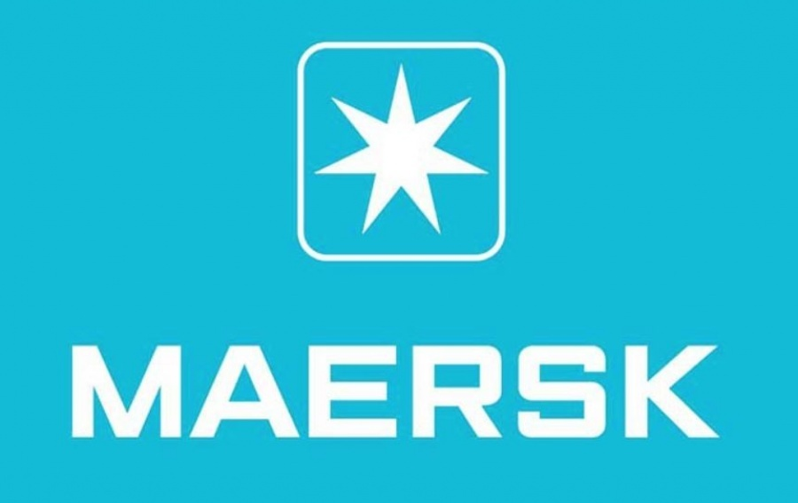

В 1999 году SeaLand купил Maersk, и новая компания стала называться Maersk Sealand, а позже - Maersk Line
Контейнеровоз Maersk в порту Гданьска

Maersk — датская компания, специализирующаяся на морских грузовых перевозках и обслуживании портовых терминалов. Принадлежит A. P. Moller-Maersk Group - диверсифицированным конгломератом, работающим в сфере судоходства, нефтегазовой промышленности, судостроения, розничной торговли, информационных технологий и других отраслях.